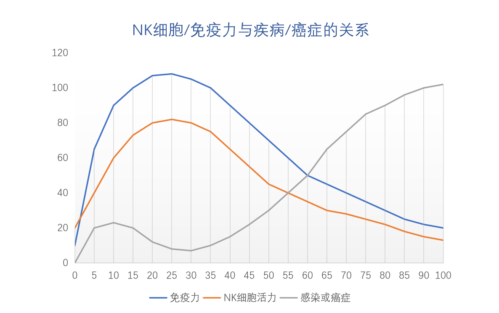
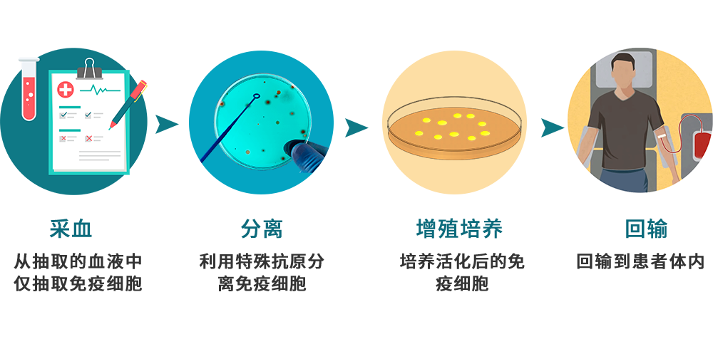
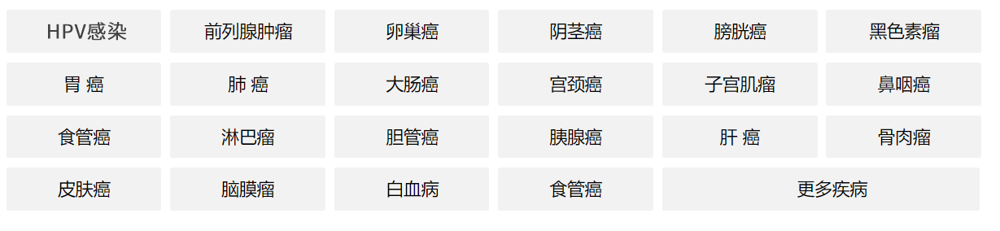
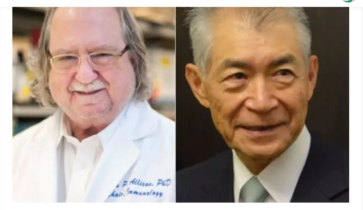

生命的卫士——免疫细胞
我们体内的细胞每时每刻都在进行着分裂和增殖，以维持各项生理功能及组织器官的正常运转。但随着细胞的持续分裂，少数细胞发生突变，有的变为癌细胞。 我们之所以没有得癌，是因为我们体内的防癌抗癌卫士——免疫细胞，不辞辛劳的奋战在捍卫人体健康的第一道防线上。
免疫细胞就像巡警一样，在人体里通过血液循环日夜游弋全身，外剿夙敌（细菌和病毒）、内清叛变（正常细胞突变的癌细胞和衰老细胞等）。当有外敌入侵时，免疫细胞就会快速反应，将其清除；如果细胞中出现叛变分子，免疫细胞就会扮演安保系统，将其识别并清除，从而避免癌症的发生。
正常生理状态下，从30岁开始，人体内的免疫细胞数量和活性随着年龄的增加而急剧下降，60岁时会降到年轻时的一半。环境污染、精神压力等因素会加速免疫细胞活性下降的速度。当外敌入侵过多，或细胞中的叛变分子——癌细胞太多时，人体免疫系统没有能力及时清除癌细胞，无限增殖的癌细胞在体内不断堆积，最终形成肿瘤。这便是50岁往后肿瘤多发的缘由。

对于癌症患者来说，在与癌细胞抗争的进程中，免疫细胞的活性、数量和杀伤力往往已普遍严重受损，不能有效地识别、消除癌细胞；另一方面，癌细胞大量增殖，又进一步抑制患者的免疫功能，这便是癌症复发和转移的原因之一。
在人类和癌症抗争的过程中，治疗手段经历了数次革命——从手术到放化疗，从放化疗到分子靶向药物治疗，当传统手段对于癌症束手无策时，免疫细胞生物科技的发展为癌症的治疗提供了全新的希望。
免疫细胞科技是从血液中采集免疫细胞，通过专门的培养使其增殖、活化，使细胞数目大量增加，再将功能增强后的免疫细胞注入体内，从而增强对癌细胞杀伤力的技术。与传统疗法依靠外部力量直接作用于癌细胞不同，免疫细胞科技并不直接针对癌细胞，而是动员人体自身免疫细胞参与攻击癌细胞，通过增强患者自身的免疫力来杀伤或抑制癌症。

与传统治疗相比，免疫细胞科技有着非常明显的优势：
*无排斥反应，不伤及正常细胞，不良反应极少；
*针对非实体瘤，免疫细胞科技的优势更明显；
*能清除残余肿瘤细胞，并形成记忆型免疫，预防复发和防止转移；
*配合手术与放化疗使用，能提高放化疗效果，降低放化疗副作用；
*对失去手术机会及产生耐药性的肿瘤患者，免疫细胞科技更安全更高效；
*通过抽血和点滴的方式进行，治疗轻松简便，基本上为门诊治疗，无需住院。
免疫细胞科技对于多种实体肿瘤及血液系统肿瘤都展现出了十分强劲的效果。如乳腺癌、恶性黑色素瘤、前列腺癌、结肠癌、直肠癌、肾癌、膀胱癌、卵巢癌、宫颈癌、肺癌、喉癌、鼻咽癌、胰腺癌、肝癌、胃癌等实体肿瘤，多发性骨髓瘤、B 淋巴瘤和白血病等血液系统恶性肿瘤以及HPV感染等。

免疫细胞科技适用病症
免疫细胞科技受到广泛认同
免疫细胞科技适用于各阶段的癌症患者，包括检查筛查肿瘤标志物超高者、已经确诊肿瘤者、常规治疗疗效不佳者、二次复发转移者、无法进行手术者等。
利用免疫细胞消除癌细胞，为缓解癌症患者的病痛开辟了新天地，并以显著的优势和效果受到医学界的广泛认同，于2013年被国际顶尖杂志《Science》评选为“年度十大突破之首”。既安全又有效，这是免疫科技的巨大优势。
2018年，美国科学家詹姆斯·艾利森和日本科学家本庶佑则凭借在免疫学及癌症治疗领域内的突出贡献荣获2018诺贝尔生理学或医学奖。

左：詹姆斯·艾利森（James Allison）；右：本庶佑（Tasuku Honjo）
近几年，免疫细胞科技在黑色素瘤、肺癌、肾癌等患者中都制造出了一批“超级幸存者”，最初接受治疗的一批患者，很多已经存活了10年以上。即使采用传统治疗失效、被判死刑的晚期癌症患者也从中看到了新希望。免疫细胞科技正成为防止癌细胞复发和转移的关键力量。

成功案例——白血病治疗
2012年，7岁的急性淋巴细胞白血病患者Emily已经命悬一线，各种传统疗法都失败后，医生表示已经无能回天。她的父母却不甘心放弃她的生命，冒险参加了宾夕法尼亚大学的一项试验性疗法，成为了全球第一个接受试验性CAR-T细胞免疫治疗的儿童患者，并且得到了成功救治，检查结果显示她体内的癌细胞已经彻底消失。从失望-绝望-希望，如今8年过去了，Emily依然健康。
成功案例——黑色素瘤治疗
2015年8月20日，近91岁高龄的美国前总统吉米·卡特（Jimmy Carter）宣布自己确诊罹患晚期黑色素瘤，癌细胞已经转移至肝脏和脑部，转移到脑中的4个瘤块约2毫米大小。黑色素瘤是皮肤癌中恶性程度最高，治疗难度最大，死亡率极高的瘤种。幸运的是此时神药横空出世，吉米·卡特在PD-1药物的治疗下，4个月之后脑部的肿瘤奇迹般的消失了。直到今天，并无任何复发迹象。
美国前总统吉米•卡特让这一新疗法进入公众视野